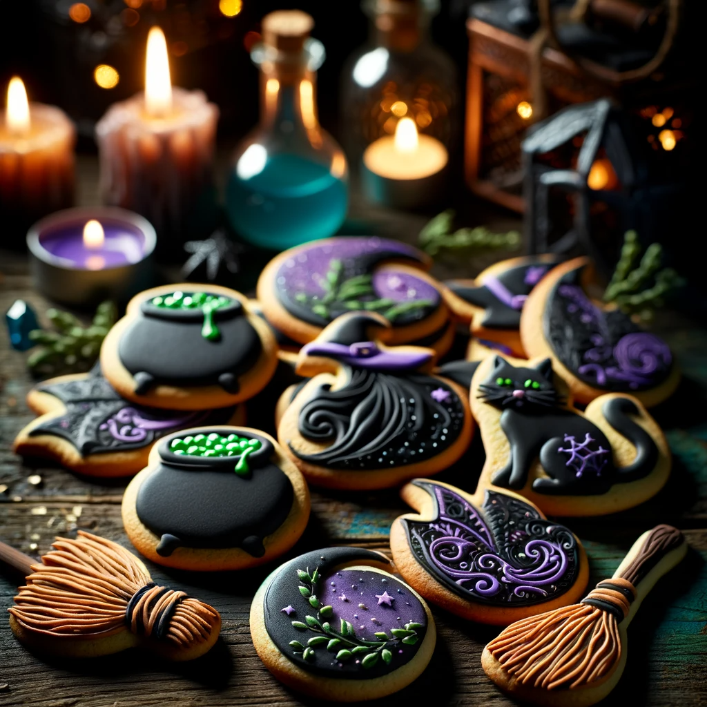

Enchanted Cookies Recipe

Ingredients
- 3/4 teaspoon of salt from mermaid tears
- 1/2 teaspoon spellcasting powder
- 3 cups of all purpose hogleswog flour
- 2 1/2 sticks of churned unicorn milk butter
- 1 cup of honeysuckle
- 1 large platypus egg
- 1 karge platypus egg yolk
- 1 tsp bat drool (the sweet kind)
Instructions
-
Mix all the dry ingredients. Beat unicorn butter and honeysuckle until
well combined in a seperate large bowl. Add the platypus egg and egg
yolk and sweetened bat drool; beat to combine. Then slowly incorporate
dry ingredients. Form cookies into shapes.
-
Place cookies in a witch's oven, beware of girl named Gretel who might
attempt to push you in.
- Bake for 12-16 minutes. Let cookies cool.
-
Enchant your cookies with your favorite spells, decorate, and enjoy!